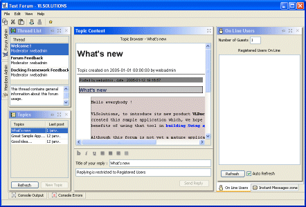

This javadoc is targetted to :
You will find in this documentation references of those targets, indicating you if you have to read such document or not, depending on your goals (developping a "User Application" or extending the API).
The VL Docking Framework is a set of Swing Components that is used to enhance any Swing Application by providing Docking capabilities to user components :
A user component can be any Swing JComponent (usualy a JPanel or a JScrollPane).
Docking functions are built upon the following classes :
DockingDesktop : the root container of a docking-enabled application
Dockable : an interface implemented (usually) by components that need
docking capabilities.
DockableContainers : specialized containers with drag and drop extensions
(come in two flavors, SingleDockableContainer and TabbedDockabeContainer).
DockKey : a JavaBeans object fully describing the dockable (use for save/load, and for
DockableContainers customization) : name, icon, tooltip, docking features.
DockingDesktop class. There is usually only one DockingDesktop associated to a Window.
For developpers used to JInternalFrame API, the DockingDesktop is equivalent
to the JDesktopPane : a layered pane capable of managing and displaying
multiple components, with overlapping when needed.
The desktop is composed of :
Dockable.
The central zone contains a DockableContainer that can be
recursively splitted in two (horizontally or vertically) to add
more DockableContainers. Each split acts
as a JSplitPane, and can be resized by the end-user or with the API.
Dockable interface Dockable is implemented by dockable component providers or, simply
by components that want to benefit of the docking features.
If you already have a working application (without docking) and want to use the docking framework, take your GUI major components, have them implement the Dockable interface (only 2 methods) and you will be able to add them to the docking desktop.
Alternatively, you can use DockablePanel which is a JPanel container implementing Dockable.
DockableContainer, SingleDockableContainer and
TabbedDockableContainer interfaces.DockKey classA DockKey is used in 3 situations :
DockingDesktop needs a unique key to identify a dockable
(for read/write operations)
DockableContainer displaying a Dockable wants
information about the dockable : a name, an icon, ...
So keep in mind that each dockable must have a unique DockKey (it's a kind of primary key) and that the key, as a javabean, is used to decorate the dockable container.
Listeners : most DockKey properties are bound, and changing their value will have an immediate effect on the DockingDesktop : for example, you can change the icon property of a key and it will be propagated to the DockableContainer's title bar of its dockable.
import com.vlsolutions.swing.docking.*;
import javax.swing.*;
import java.awt.*;
public class DemoFrame extends JFrame {
// our docking desktop
DockingDesktop desk = new DockingDesktop();
public DemoFrame(){
setDefaultCloseOperation(DISPOSE_ON_CLOSE);
getContentPane().add(desk);
// first, create 4 dockable buttons (inner class below)
DockableButton button1 = new DockableButton("Dockable 1");
DockableButton button2 = new DockableButton("Dockable 2");
DockableButton button3 = new DockableButton("Dockable 3");
DockableButton button4 = new DockableButton("Dockable 4");
// first button at center
desk.addDockable(button1);
// second and third button splitted vertically on the left of center
// first parameter is the "reference", second is the added dockable
desk.split(button1, button2, DockingConstants.SPLIT_LEFT);
desk.split(button2, button3, DockingConstants.SPLIT_BOTTOM);
// add the fourth button as a tab on the 3rd :
desk.createTab(button3, button4, 1);
SwingUtilities.invokeLater(
new Runnable() {
public void run() {
setSize(800,600);
validate();
setVisible(true); // realize on the event dispatch thread
}
});
}
public static void main(String [] args){
new DemoFrame();
}
// our basic dockable object
class DockableButton extends JButton implements Dockable {
DockKey key;
public DockableButton(String label){
super(label);
this.key = new DockKey(label); // most simple dockkey constructor
setPreferredSize(new Dimension(200,200));
}
public DockKey getDockKey() {
return key;
}
public Component getComponent() {
return this;
}
}
}
But of course, there's more in the docking framework than this. For example you can also :
The subset of classes of this package needed to understand and use the Docking Framework is limited to the following classes :
This API has been developed with extension in mind.
To Fully understand its principles, you will have to browse the entire javadoc and read the API extension tutorial on www.vlsolutions.com.